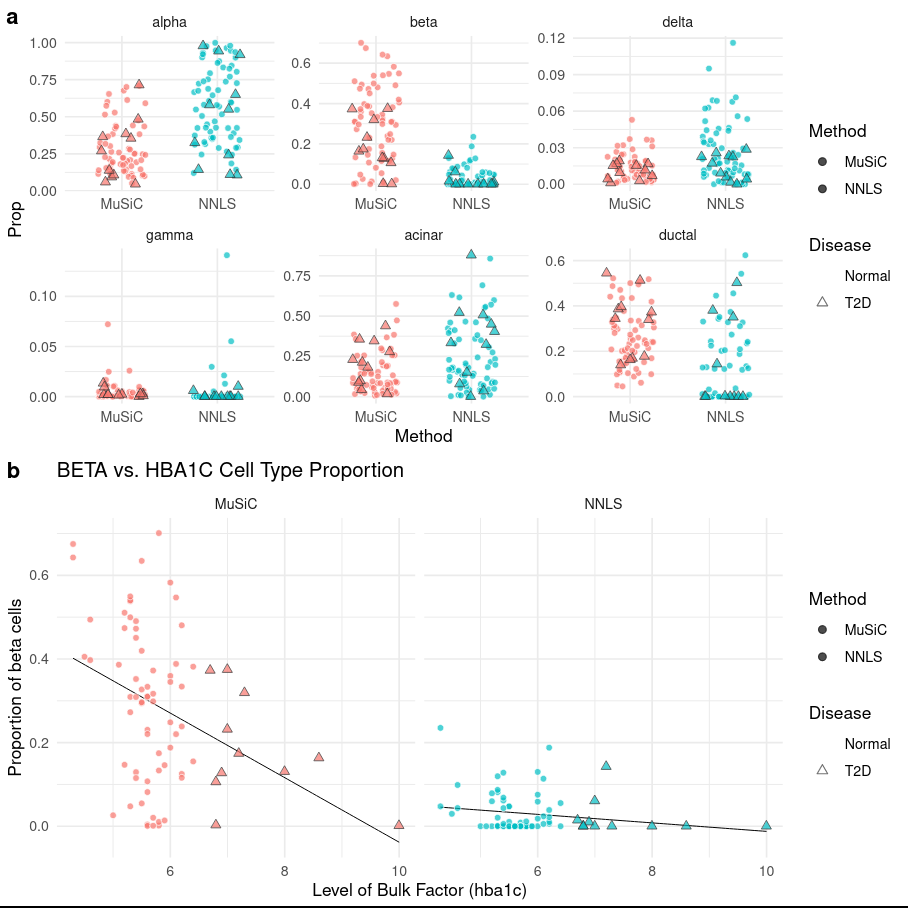

Bulk RNA-seq data contains a mixture of transcript signatures from several types of cells. We wish to deconvolve this mixture to obtain estimates of the proportions of cell types within the bulk sample. To do this, we can use single cellRNA-seq data as a reference for estimating the cell type proportions within the bulk data.
In this tutorial, we will use bulk and single-cellRNA-seq data, including matrices of similar tissues from different sources, to illustrate how to infer cell type abundances from bulk RNA-seq.
The heterogeneity that exists in the cellular composition of bulk RNA-seq can add bias to the results from differential expression analysis. In order to circumvent this limitation, RNA-seq deconvolution aims to infer cell type abundances by modelling the gene expressions levels as ‘weighted sums’ of cell type specific expression profiles.
details More details on ‘Sums’
So… You fancy some maths do you? Good! This is important, as you’ll see variations of the phrase ‘weighted sums’ if you ever look at any papers in the field! Let’s think about just the ‘sums’ here.
If we think about the total expression of a given gene you might get from bulk RNA-seq, you could also think about it as the sum of the expression of each cell, for example,
Total = cellaexpression + cellbexpression … (and so forth)
This is a ‘sum’, because we’re adding up all the cells. If we now think about how we expect similar expression from similar cell types, we could change this to the following:
Total = cell_typeaexpression + cell_typebexpression … (and so forth)
BUT WAIT! That’s not strictly true, because the cell types are not all in equal proportion (if only!). So we have to take into account another variable, the proportion a given cell type takes up in a sample. So we now have:
Total = Proportiona x cell_typeaexpression + Proportionb x cell_typebexpression
So now, we are using the sums of expression based off of the cell proportion. And if you’re a mathematician, you might instead put this as
T = C x P
or some fancier formulas…(read more in-depth here if you like!)
The point is, if we have an idea of what the average expression should be for each gene (what we can get from single cellRNA-seq data, C), and we have the total expression (from the bulk RNA-seq, C), then we can infer the cell proportions (P).
Many different computational methods have been developed to estimate these cell type proportions, but in this tutorial we will be using the MuSiC tool suite Wang et al. 2019 to estimate the proportion of individual cell types in our bulk RNA-seq datasets.
MusiC
MuSiC uses cell-type specific gene expression from single-cellRNA seq data to characterize cell type compositions (proportions) from bulk RNA-seq data in complex tissues. By appropriate weighting of genes showing cross-subject (sample to sample) and cross-cell (cells of the same cell type within a sample) consistency, MuSiC enables the transfer of cell type-specific gene expression information from one dataset to another.
question Question
What is a weighted sum? Hint: What kinds of genes would be best for distinguishing cell types, and what kinds of genes would make it difficult?
solution Solution
So you know what the Sum is from above - the total expression of a given gene in a bulk RNA-seq sample depends on the proportion of cell types and the average expression level of each of those cell types (T = C x P). However, single cellRNA-seq data is highly variable. Cell-type specific expression in genes with lower variation from sample to sample (i.e. person to person or organism to organism) and cell to cell (i.e. within a sample) will be the most useful for distinguishing cells, while genes that vary heavily (i.e. high in cell typea in one sample, but low in cell typea in another sample) will be the least useful in accurately distinguishing cells. Therefore, to accurately use the mean expression level in a cell_type, MusiC weights the sums, favouring more consistently expressed genes in cell types.
Solid tissues often contain closely related cell types that are difficult to distinguish from one another, a phenomenon known as “collinearity”. To deal with collinearity, MuSiC can also employ a tree-guided procedure that recursively zooms in on closely related cell types. Briefly, MuSic first groups similar cell types into the same cluster and estimates cluster proportions, then recursively repeats this procedure within each cluster.
Figure 1: Overview of MuSiC Suite
Cell Proportion Estimation
Here we will extract cell proportions from a bulk data of human pancreas data from Fadista et al. 2014 concerning 56 638 genes across 89 samples, using a single cell human pancreas dataset from Segerstolpe et al. 2016 containing 25 453 genes across 2209 cells, clustered into 14 cell types, from 6 healthy subjects and 4 with Type-II diabetes (T2D). If the deconvolution is good, and the datasets are compatible with sufficient enough overlap, we should be able to identify the same cell types from the bulk data.
Get data
hands_on Hands-on: Data upload
Create a new history for this tutorial “Deconvolution: Cell Type inference of Human Pancreas Data”
Import the files from Zenodo or from
the shared data library (GTN - Material -> transcriptomics
-> Bulk RNA Deconvolution with MuSiC):
Open the Galaxy Upload Manager (galaxy-upload on the top-right of the tool panel)
Select Paste/Fetch Data
Paste the link into the text field
Press Start
Close the window
Tip: Importing data from a data library
As an alternative to uploading the data from a URL or your computer, the files may also have been made available from a shared data library:
Go into Shared data (top panel) then Data libraries
Navigate to the correct folder as indicated by your instructor
Select the desired files
Click on the To History button near the top and select as Datasets from the dropdown menu
In the pop-up window, select the history you want to import the files to (or create a new one)
Click on Import
Rename the datasets
Check the datatype
Tip: Changing the datatype
Click on the galaxy-pencilpencil icon for the dataset to edit its attributes
In the central panel, click on the galaxy-chart-select-dataDatatypes tab on the top
Select tabular
Click the Save button
Add to each expression file a tag corresponding to #bulk and #scrna
Tip: Adding a tag
Click on the dataset
Click on galaxy-tagsEdit dataset tags
Add a tag starting with #
Tags starting with # will be automatically propagated to the outputs of tools using this dataset.
Check that the tag is appearing below the dataset name
Exploring the Datasets
We are told before we download the data, that:
The bulk human pancreas dataset is 89 samples across 56 638 genes
The single cell human pancreas datasets is 2209 cells across 24 453 genes.
But what does this actually look like in the data?
comment Comment: Inspecting Datasets
Note that at any time you can visually inspect the input datasets yourself by either:
Expanding the dataset in the history panel clicking on the name of the dataset
Or clicking on galaxy-eye icon to load them into the main window.
Let’s start exploring the datasets.
hands_on Hands-on: Exploring the Datasets
Inspect the #scrnaexpression file
question Questions
What do the rows and columns correspond to?
What do the values at each position mean?
Has the data been normalised?
Why are there so many zeroes?
solution Solution
Figure 2: Peeking at the tabular scRNAexpression dataset
Rows correspond to gene names, and columns to cell identifiers
These are the number of reads or counts for each gene for each cell
The data has not been normalised since the counts are integer and not decimal
Single-cell datasets can be very sparse for a variety of reasons relating to dropouts and biological factors. For more information, please see the introduction single-cellRNA-seq slides#41.
Inspect the #bulkexpression file
question Questions
What do the rows and columns correspond to?
In which field is there likely to be overlap with the #scrna dataset?
solution Solution
Figure 3: Peeking at the tabular bulk RNA-seq expression dataset
As before with the #scrna dataset, rows correspond to gene names and columns to sample identifiers.
The sample identifiers and the cell identifiers are completely different, but the gene names appear to be using the same symbols as the #scrna dataset, so the gene field is the common factor here.
Inspect the #scrna phenotype file
question Questions
Does the phenotypes file describe genes or cells?
What does the SubjectName field describe?
What does the cellType field describe?
solution Solution
Figure 4: Peeking at the tabular scRNA phenotype dataset
The first column is the index column, which uses the cell identifiers in the header of the #scrnaexpression file, so the phenotypes file describes the cells.
SubjectName tells us whether the cell (on that row) is labelled as Type-II diabetes or not, “Non T2D” or “T2D” respectively.
cellType tells us which cell type the cell was assigned to. This could be the result of prior-clustering and then labelling, or the cells could be labelled before analysis.
Inspect the #bulk phenotype file
question Questions
Does the phenotypes file describe genes or samples?
Is the SubjectName field related to the SubjectName field in the #scrna phenotypes file?
What other factors are in the phenotypes file?
Is the tissue field related to the cellType field in the #scrna phenotypes file?
solution Solution
Figure 5: Peeking at the tabular bulk RNA-seq phenotype dataset
The first column is the index column, which uses the sample identifiers in the header of the #bulkexpression file, so the phenotypes file describes the samples.
The SubjectName column uses a completely different set of identifiers from the #scrna phenotypes file so they should be assumed to be unrelated.
We see age, bmi, hba1c, gender, tissue. HbA1c appears to be a gene of interest related to a known phenotype.
This is the question we wish to answer in the deconvolution. Visually, there appears to be no overlap, but the “pancreatic islets” tissue likely consists of several cell types that show expressions profiles with some affinity to the single cell types described in the #scrna phenotypes file.
The bulk RNA-seq phenotype file lists the main factors of interest, and HbA1c appears to be a specific gene assosciated with a phenotype. It is well known that the beta cell proportions are related to T2D disease status. In the progress of T2D, the number of beta cells decreases. One of the most important tests for T2D is the HbA1c (hemoglobin A1c) test. When the HbA1c level is greater than 6.5%, the patient is diagnosed as T2D. We will look later at the beta cell proportions relationship with HbA1c level in this deconvolution analysis.
Building the Expression Set objects
For now we need to construct our Expression set objects that will be consumed by MuSiC.
details Details: Expression Set
Figure 6: Image from Stefano Monti
Expression Set objects are a container for high-throughput assays and experimental metadata. The ExpressionSet class is derived from eSet, and requires a matrix named exprs.
The ExpressionSet class is designed to combine several different sources of information into a single convenient structure. An ExpressionSet can be manipulated (e.g., subsetted, copied) conveniently, and is the input or output from many Bioconductor functions.
The data in an ExpressionSet is complicated, consisting of:
expression data (exprs, or assayData; assayData is used to hint at the methods used to access different data components, as we will see below);
metadata describing samples in the experiment (phenoData, pData)
information related to the protocol used for processing each sample and usually extracted from manufacturer files (protocolData);
annotations and metadata about the features on the chip or technology used for the experiment (featureData, annotation, fData);
and a flexible structure to describe the experiment (experimentData).
The ExpressionSet class coordinates all of this data, so that you do not usually have to worry about the details.
Here we shall build two ExpressionSet objects corresponding to the bulk and single-cell datatypes.
Construct Expression Set Object
hands_on Hands-on: Build the Expression Set inputs
Construct Expression Set ObjectTool: toolshed.g2.bx.psu.edu/repos/bgruening/music_construct_eset/music_construct_eset/0.1.1+galaxy3 with the following parameters:
An ExpressionSet object has many data slots, the principle of which are the experiment data (exprs), the phenotype data (pData), as well metadata pertaining to experiment information and additional annotations (fData).
Construct Expression Set ObjectTool: toolshed.g2.bx.psu.edu/repos/bgruening/music_construct_eset/music_construct_eset/0.1.1+galaxy3 with the following parameters:
We will now inspect these objects we just created to see what information we can extract out of them, and how these multiple datasets are summarized within the object.
hands_on Hands-on: Inspect and Describe the scRNAExpressionSet Object
Obtain General Info about the data set
galaxy-eye Click on the #scrnaGeneral Info dataset in the history view (output of Construct Expression Set Objecttool)
Obtain Feature Information about the data set
Inspect Expression Set ObjectTool: toolshed.g2.bx.psu.edu/repos/bgruening/music_inspect_eset/music_inspect_eset/0.1.1+galaxy3 with the following parameters:
warning Danger: This tool has needs!
You may need to click the dataset from your history and drag it into the input of this tool. Some browsers don’t allow this.
param-file“ESet Dataset”: #scrna (output of Construct Expression Set Objecttool)
“Inspect”: Feature Data Table
comment Comment: Features or Genes?
“Features” are synonymous with “Genes” in a genomic setting, but data scientists tend to prefer to use the former term, as it can be used in other non-genomic settings.
By inspecting the Feature Data Table, you should see a list of gene names.
Obtain the dimensions of the data set
Inspect Expression Set ObjectTool: toolshed.g2.bx.psu.edu/repos/bgruening/music_inspect_eset/music_inspect_eset/0.1.1+galaxy3 with the following parameters:
param-file“ESet Dataset”: #scrna (output of Construct Expression Set Objecttool)
“Inspect”: Dimension
question Questions
How many samples are in the dataset, and how many genes?
Does this agree with the original input tabular expression data set?
solution Solution
1097 samples and 25 453 genes
Yes!
Estimating Cell Type proportions
Instead of selecting marker genes, MuSiC gives weights to each gene. The weighting scheme is based on cross-subject variation, by up-weighing genes with low variation and down-weighing genes with high variation in a cell type. Here we demonstrate this step-by-step with the human pancreas datasets.
The deconvolution of 89 subjects from Fadista et al. 2014 is performed with the bulk data GSE50244 expression set and single cell reference EMTAB. The estimation was constrained on 6 major cell types: alpha, beta, delta, gamma, acinar and ductal, which make up over 90% of the whole islet.
Cell Type estimation with MuSiC
The deconvolution process can be performed by simply inputting the bulk RNA-seq & scRNA-seq datasets and then hitting execute. However, in this section we will be tracing the effect of a disease phenotype across both datasets.
Here we will use one of the factors from the bulk RNA-seq phenotypes related to the the T2D disease status. Any bulk RNA-seq sample coming from a patient with the HbA1c factor above 6.5% would be clinically classified as having T2D, so we want to compare these datasets with non-diseased samples. As diabetes affects Beta cells, we’re particularly interested in these cells proportions - mostly to prove that the deconvolution has worked well!
It’s also important that input scRNA-seq datasets (ideally) have some representation of cell populations from diseased patients.
question Questions
Why should the scRNA-seq dataset contain diseased cells and healthy cells?
solution Solution
For instance, there might be a weird extra cell type that appears in the disease phenotype. Or perhaps there is a missing cell type in the disease phenotype. Without both healthy & diseased datasets, the cells in the bulk datasets might not be fully identifiable. Saying that, such datasets are not always available - something to keep in mind when interpreting the results!
hands_on Hands-on: Task description
MuSiCTool: toolshed.g2.bx.psu.edu/repos/bgruening/music_deconvolution/music_deconvolution/0.1.1+galaxy3 with the following parameters:
*MuSiC sometimes does not show up from the tool search box. You may need to look for it under the Single Cell heading
param-file“scRNA Dataset”: #scrna (output of Construct Expression Set Objecttool)
param-file“Bulk RNA Dataset”: #bulk (output of Construct Expression Set Objecttool)
“Purpose”: Estimate Proportions
“Methods to use”: MuSiC and NNLS
“Cell Types Label from scRNA dataset”: cellType
“Samples Identifier from scRNA dataset”: sampleID
“Comma list of cell types to use from scRNA dataset”: alpha,beta,delta,gamma,acinar,ductal
Under “Show proportions of a disease factor?”: Yes
“scRNA Phenotype Cell Target”: beta
“Bulk Phenotype Target”: hba1c (Factor from Bulk Phenotype)
“Bulk Phenotype Target Threshold”: 6.5
“scRNA Sample Disease Group”: T2D (Ideally a Factor from scRNA Phenotype)
“scRNA Sample Disease Group (Scale)”: 5
comment Comment
It’s important to set a phenotype target threshold, otherwise no cells will be matched for the phenotype target. In this case, when the HbA1c level is greater than 6.5%, the patient is diagnosed as T2D.
The estimated proportions are normalized such that the proportions of cell types within each sample sum to 1. MuSic compares itself against a previous method of deconvolution known as Non-negative Least-Squares (NNLS), which MuSic supercededs via its Weighted Non-negative Least-Squares (W-NNLS) methodology. You can remove this if you wish from within the tool parameters when running.
Figure 7: Jitter plot of Estimated Proportions
In the above image you can see (a) the estimated proportion of cells for each of the 6 declared types, as calculated by MuSiC and the NNLS methods, respectively. In the (b) section, this information is better represented as a box plot to show you the distribution of cell type proportions.
Figure 8: (top) Cell type proportions by disease factor, and (bottom) HbA1c factor expression against beta cell type proportion
As stated previously, it is well known that the beta cell proportions are related to T2D disease status. As T2D progresses, the number of beta cells decreases. In the above image we can see in (a) that we have the same information as previous, but we also distinguish between cells that from patients with T2D status over the Normal cell phenotypes. Section (b) further explores this with a linear regression showing the cell type proportion of cells with HbA1c expression, where we see that there is a significant negative correlation between HbA1c level and beta cell proportions.
comment Comment
We can extract the coefficients of this fitting by looking at the Log of Music Fitting Data in the Summaries and Logs output collection:
In addition to HbA1c levels, gender has also correlated with beta cell proportions. This is unsurprising, as more men have diabetes than women and sex is known to impact HbA1c levels.
Proportions of Cell Type to each Bulk RNA sample
One question we might wish to ask is: what affinity did each of the 6 single cell types have to each of the 89 subjects in the bulk data? For this we can look at the raw data galaxy-eyeMuSiC Estimated Proportions of Cell Types in the Proportion Matrices, to get a glimpse of cell type compositions on a bulk RNA sample level.
Both the MuSiC and the NNLS calculations of this data is best represented in the below heatmap, with RNA samples as rows and cell types as columns:
Figure 9: Heatmap of cell type proportions at the RNA sample level.
question Questions
Which cell types are under-represented in the NNLS method?
Which cell types do not appear to be present in both?
solution Solution
Here it is evident that the previous NNLS method over-represents the Alpha cell type compared to the MuSiC method which gives more weight to the Beta and Ductal cell types, which were under-represented in the NNLS method.
The Delta and Gamma cell types appear empty in both.
Estimation of cell type proportions with pre-grouping of cell types
In the previous section we estimated cell types under the assumption that that the gene expression between cell types was largely independent. However, solid tissues often contain closely related cell types. This correlation of gene expression between these cell types is termed ‘collinearity’, which makes it difficult to resolve their relative proportions in bulk data.
To deal with collinearity, MuSiC can also employ a tree-guided procedure that recursively zooms in on closely related cell types.
Briefly, similar cell types are grouped into the same cluster and their cluster proportions are estimated, then this procedure is recursively repeated within each cluster. At each recursion stage, only genes that have low within-cluster variance are used, as they should be consistent within a cell type. This is critical as the mean expression estimates of genes with high variance are affected by the pervasive bias in cell capture of scRNA-seq experiments, and thus cannot serve as reliable reference.
To perform this analysis, we will use mouse kidney single-cellRNA-seq data from Park et al. 2018 described by 16 273 genes over a trimmed subset of 10 000 cells, giving 16 unique cell type (2 of which are novel) across 7 subjects. The bulk RNA-seq dataset is from Beckerman et al. 2017 and contains mouse kidney tissue described by 19 033 genes over 10 samples.
Get data
hands_on Hands-on: Data upload
Create a new history for this tutorial “Deconvolution: Dendrogram of Mouse Data”
Import the files from Zenodo or from
the shared data library (GTN - Material -> transcriptomics
-> Bulk RNA Deconvolution with MuSiC):
Open the Galaxy Upload Manager (galaxy-upload on the top-right of the tool panel)
Select Paste/Fetch Data
Paste the link into the text field
Press Start
Close the window
Tip: Importing data from a data library
As an alternative to uploading the data from a URL or your computer, the files may also have been made available from a shared data library:
Go into Shared data (top panel) then Data libraries
Navigate to the correct folder as indicated by your instructor
Select the desired files
Click on the To History button near the top and select as Datasets from the dropdown menu
In the pop-up window, select the history you want to import the files to (or create a new one)
Click on Import
Rename the datasets
Check that the datatype
Tip: Changing the datatype
Click on the galaxy-pencilpencil icon for the dataset to edit its attributes
In the central panel, click on the galaxy-chart-select-dataDatatypes tab on the top
Select tabular
Click the Save button
Add to each expression file a tag corresponding to #bulk and #scrna
Tip: Adding a tag
Click on the dataset
Click on galaxy-tagsEdit dataset tags
Add a tag starting with #
Tags starting with # will be automatically propagated to the outputs of tools using this dataset.
Check that the tag is appearing below the dataset name
details Exploring the Datasets
As before, you may choose to explore the bulk and scrna datasets and try to determine their factors from the phenotypes as well as any overlapping fields that will be used to guide the deconvolution.
You will need to again create ExpressionSet objects, as before.
Construct Expression Set Object
hands_on Hands-on: Build the Expression Set inputs
Construct Expression Set ObjectTool: toolshed.g2.bx.psu.edu/repos/bgruening/music_construct_eset/music_construct_eset/0.1.1+galaxy3 with the following parameters:
An ExpressionSet object has many data slots, the principle of which are the experiment data (exprs), the phenotype data (pData), as well metadata pertaining to experiment information and additional annotations (fData).
Construct Expression Set ObjectTool: toolshed.g2.bx.psu.edu/repos/bgruening/music_construct_eset/music_construct_eset/0.1.1+galaxy3 with the following parameters:
Colinearity Dendrogram with MuSiC to determine cell type similarities
Determining cell type similarities requires first producing a design matrix as well as a cross-subject mean of relative abundance, using a tree-based clustering method of the cell types we wish to cluster.
hands_on Hands-on: Task description
MuSiCTool: toolshed.g2.bx.psu.edu/repos/bgruening/music_deconvolution/music_deconvolution/0.1.1+galaxy3 with the following parameters:
param-file“scRNA Dataset”: #scrna (output of Construct Expression Set Objecttool)
param-file“Bulk RNA Dataset”: #bulk (output of Construct Expression Set Objecttool)
“Purpose”: Compute Dendrogram
“Cell Types Label from scRNA Dataset”: cellType
“Cluster Types Label from scRNA dataset”: clusterType
“Samples Identifier from scRNA dataset”: sampleID
“Comma list of cell types to use from scRNA dataset”: Endo,Podo,PT,LOH,DCT,CD-PC,CD-IC,Fib,Macro,Neutro,B lymph,T lymph,NK
Figure 10: Dendrogram of Design Matrix and Cross-Subject Mean of Relative Abundance
question Questions
What do you notice about the cells clustering?
How many clusters can you see with a height threshold above 650 in the “Cluster log(Design Matrix)”?
solution Solution
The immune cells are clustered together and the kidney specific cells are clustered together. Notice that DCT and PT are within the same high-level grouping.
The cut-off of 650. Here we cut 13 cell types into 4 groups:
C1: Neutro
C2: Podo
C3: Endo, CD-PC, CD-IC, LOH, DCT, PT
C4: Fib, Macro, NK, B lymph, T lymph
Heatmap of Cell Type Similarities using MuSiC
We shall use the 4 cell type groups determined by the cut off threshold in the above question box. To guide the clustering, we shall upload known epithelial and immune cell markers to improve the more diverse collection of cell types in the C3 and C3 groups.
hands_on Hands-on: Upload marker genes and generate heatmap
Import the files from Zenodo or from
the shared data library (GTN - Material -> transcriptomics
-> Bulk RNA Deconvolution with MuSiC):
Open the Galaxy Upload Manager (galaxy-upload on the top-right of the tool panel)
Select Paste/Fetch Data
Paste the link into the text field
Press Start
Close the window
Tip: Importing data from a data library
As an alternative to uploading the data from a URL or your computer, the files may also have been made available from a shared data library:
Go into Shared data (top panel) then Data libraries
Navigate to the correct folder as indicated by your instructor
Select the desired files
Click on the To History button near the top and select as Datasets from the dropdown menu
In the pop-up window, select the history you want to import the files to (or create a new one)
Click on Import
MuSiCTool: toolshed.g2.bx.psu.edu/repos/bgruening/music_deconvolution/music_deconvolution/0.1.1+galaxy3 with the following parameters:
Note
warning Shortcut!
Here we need to re-use all the inputs from the previous MuSiCtool step, plus add a few extra. To speed this up, you can simply click on the re-run icon galaxy-refresh under any of its outputs.
param-file“scRNA Dataset”: #scrna (output of Construct Expression Set Objecttool)
param-file“Bulk RNA Dataset”: #bulk (output of Construct Expression Set Objecttool)
“Purpose”: Compute Dendrogram
“Cell Types Label from scRNA Dataset”: cellType
“Cluster Types Label from scRNA dataset”: clusterType
“Samples Identifier from scRNA dataset”: sampleID
“Comma list of cell types to use from scRNA dataset”: Endo,Podo,PT,LOH,DCT,CD-PC,CD-IC,Fib,Macro,Neutro,B lymph,T lymph,NK
In “Cluster Groups”:
param-repeat“Insert Cluster Groups”
“Cluster ID”: C1
“Comma list of cell types to use from scRNA dataset”: Neutro
param-repeat“Insert Cluster Groups”
“Cluster ID”: C2
“Comma list of cell types to use from scRNA dataset”: Podo
param-repeat“Insert Cluster Groups”
“Cluster ID”: C3
“Comma list of cell types to use from scRNA dataset”: Endo,CD-PC,LOH,CD-IC,DCT,PT
“Marker Gene Group Name”:Epithelial
param-file“List of Gene Markers”: epith.markers (Input dataset)
param-repeat“Insert Cluster Groups”
“Cluster ID”: C4
“Comma list of cell types to use from scRNA dataset”: Macro,Fib,B lymph,NK,T lymph
“Marker Gene Group Name”:Immune
param-file“List of Gene Markers”: immune.markers (Input dataset)
comment Comment
The C1 (Neutrophil) and C2 (Podocyte) clusters do not use marker genes for the dendrogram clustering in this dataset.
Figure 11: Jitter and Boxplots of all cell types followed by a heatmap of each RNA sample against cell type. Note that the y-axis for each of the plots above are not constant across cell types.
question Questions
Most of the expression in the above plot appears to be derived from one cell type.
Which cell type dominates the plot?
What does this tell you about the bulk RNA?
solution Solution
The PT cells appear to dominate.
Most of the expression in the bulk RNA dataset is derived solely from the PT cells, and could be a monogenic cell line.
Conclusion
In this tutorial we constructed ExpressionSet objects, inspected and annotated them, and then finally processed them with the MuSiC RNA-Deconvolution analysis suite.
Below is an overview of the workflow that was used throughout this tutorial.
Figure 12:Workflow for estimating cell types
Note how two ExpressionSet objects are constructed: one from bulk RNA-seq tabular assay data, and the other from single-cellRNA-seq tabular assay data. A blind analysis of cell proportion estimation is performed first. Then in the second half of the tutorial, we performed a guided analysis using pre-grouped cell types.
Figure 13:Workflow for generating a dendrogram and clustering cells upon it
Further information, including links to documentation and original publications, regarding the tools, analysis techniques and the interpretation of results described in this tutorial can be found here.
References
Fadista, J., P. Vikman, E. O. Laakso, I. G. Mollet, J. L. Esguerra et al., 2014 Global genomic and transcriptomic analysis of human pancreatic islets reveals novel genes influencing glucose metabolism. Proceedings of the National Academy of Sciences 111: 13924–13929.
Beckerman, P., J. Bi-Karchin, A. S. D. Park, C. Qiu, P. D. Dummer et al., 2017 Transgenic expression of human APOL1 risk variants in podocytes induces kidney disease in mice. Nature medicine 23: 429–438.
Park, J., R. Shrestha, C. Qiu, A. Kondo, S. Huang et al., 2018 Single-cell transcriptomics of the mouse kidney reveals potential cellular targets of kidney disease. Science 360: 758–763.
Wang, X., J. Park, K. Susztak, N. R. Zhang, and M. Li, 2019 Bulk tissue cell type deconvolution with multi-subject single-cell expression reference. Nature communications 10: 1–9.
Tekman, M., B. Batut, A. Ostrovsky, C. Antoniewski, D. Clements et al., 2020 A single-cell RNA-sequencing training and analysis suite using the Galaxy framework. GigaScience 9: giaa102.
Feedback
Did you use this material as an instructor? Feel free to give us feedback on how it went.
Did you use this material as a learner or student? Click the form below to leave feedback.
Batut et al., 2018 Community-Driven Data Analysis Training for Biology Cell Systems 10.1016/j.cels.2018.05.012
details BibTeX
@misc{transcriptomics-bulk-music,
author = "Mehmet Tekman and Wendi Bacon",
title = "Bulk RNA Deconvolution with MuSiC (Galaxy Training Materials)",
year = "2022",
month = "02",
day = "11"
url = "\url{https://training.galaxyproject.org/training-material/topics/transcriptomics/tutorials/bulk-music/tutorial.html}",
note = "[Online; accessed TODAY]"
}
@article{Batut_2018,
doi = {10.1016/j.cels.2018.05.012},
url = {https://doi.org/10.1016%2Fj.cels.2018.05.012},
year = 2018,
month = {jun},
publisher = {Elsevier {BV}},
volume = {6},
number = {6},
pages = {752--758.e1},
author = {B{\'{e}}r{\'{e}}nice Batut and Saskia Hiltemann and Andrea Bagnacani and Dannon Baker and Vivek Bhardwaj and Clemens Blank and Anthony Bretaudeau and Loraine Brillet-Gu{\'{e}}guen and Martin {\v{C}}ech and John Chilton and Dave Clements and Olivia Doppelt-Azeroual and Anika Erxleben and Mallory Ann Freeberg and Simon Gladman and Youri Hoogstrate and Hans-Rudolf Hotz and Torsten Houwaart and Pratik Jagtap and Delphine Larivi{\`{e}}re and Gildas Le Corguill{\'{e}} and Thomas Manke and Fabien Mareuil and Fidel Ram{\'{\i}}rez and Devon Ryan and Florian Christoph Sigloch and Nicola Soranzo and Joachim Wolff and Pavankumar Videm and Markus Wolfien and Aisanjiang Wubuli and Dilmurat Yusuf and James Taylor and Rolf Backofen and Anton Nekrutenko and Björn Grüning},
title = {Community-Driven Data Analysis Training for Biology},
journal = {Cell Systems}
}
Congratulations on successfully completing this tutorial!
 Mehmet Tekman
Mehmet Tekman Wendi Bacon
Wendi Bacon Questions:
Questions: